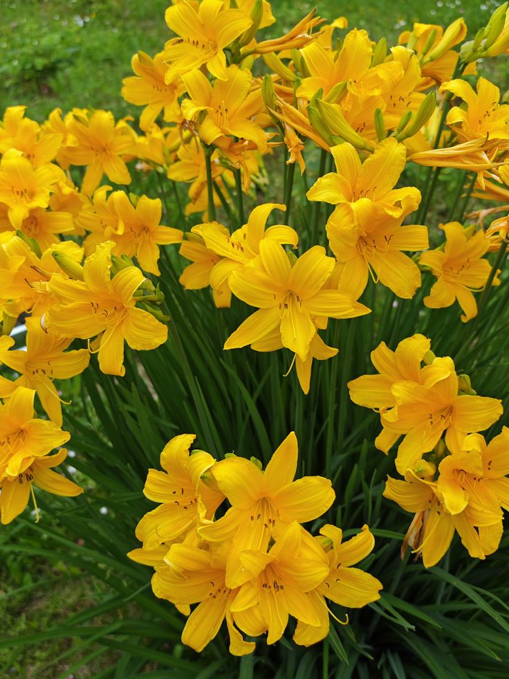
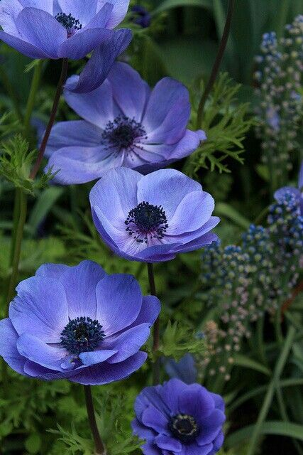

Лілійник (гемерокаліс) цінується садівниками за витривалість, невибагливість і тривале цвітіння влітку. Його квітки мають різноманітне забарвлення — від ніжно-кремового та рожевого до насиченого коралового й бордового.
Рослина добре почувається як на сонячних ділянках, так і в легкій півтіні, легко адаптується до різних типів ґрунту та рідко пошкоджується шкідниками.

Анемона вирізняється витонченою формою пелюсток і ошатним листям, яке прикрашає клумбу навіть до та після періоду цвітіння. Вона чудово доповнює як класичні квітники, так і природні композиції.
Найкраще вона розкриває свою декоративність на ділянках із помірною вологістю та захистом від сильного вітру.